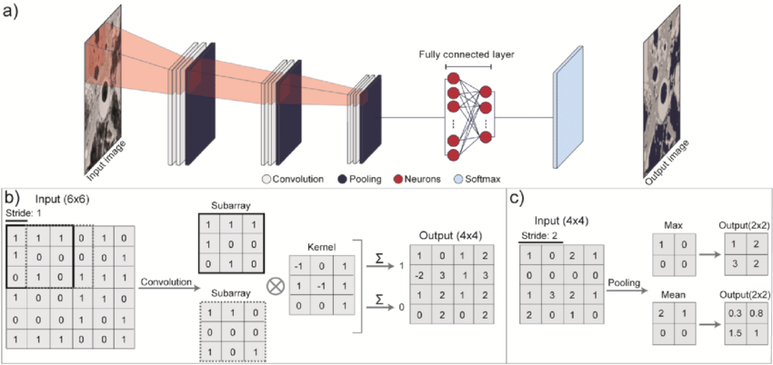
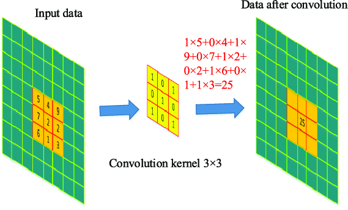
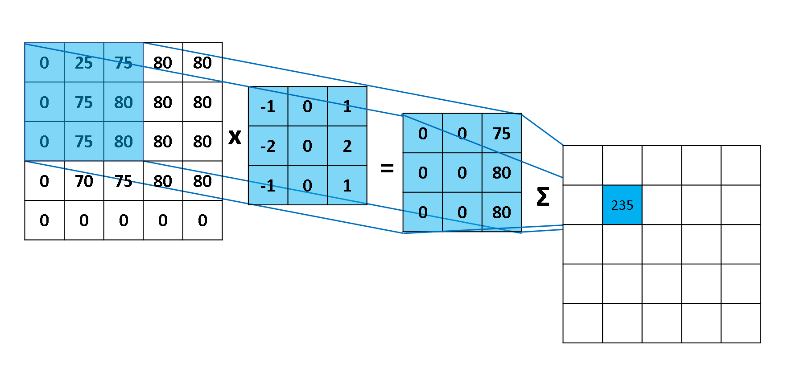
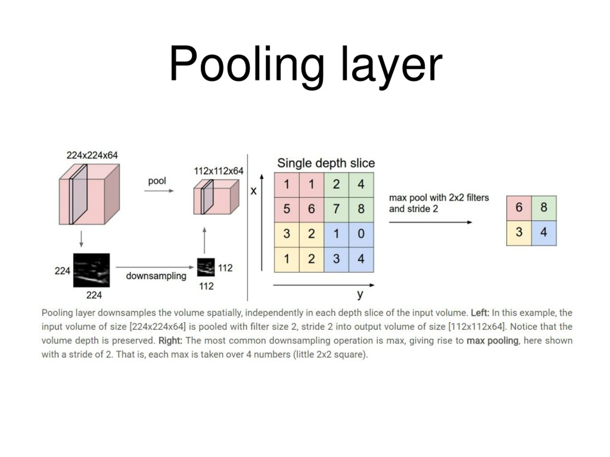

Machine Learning in General
In today’s landscape, terms like AI and Machine Learning have become ubiquitous. Yet, despite their frequent use in media and industry, the distinction between the two is often blurred. But essentially, Machine Learning (ML) is a specialized subset of Artificial Intelligence.
The rigorous paradigm of traditional programming involves a developer clearly defining logic, writing rules, and hardcoding each step needed to solve a problem. This strategy is reversed by machine learning. Developers create algorithms that learn to solve problems by evaluating data - usually through some form of “training”, rather than dictating how to do a task. And while training, these algorithms use statistical and mathematical optimization to find underlying patterns, modify internal parameters, and generalize to new, unseen inputs to solve an unseen problem with little instructions and leads from the user.
Modern machine learning is typically categorized along two primary dimensions:
Task Types
- Regression \(\implies\) Predicts a continuous numerical value. eg - Estimating house prices based on square footage, location, and age.
- Classification \(\implies\) Assigns input data to discrete, predefined categories. eg - Determining whether an email is spam or legitimate.
- Clustering \(\implies\) Groups unlabeled data based on inherent similarities or patterns, without prior knowledge of the categories. eg - Segmenting customers into distinct behavioral profiles for targeted marketing.
Learning Styles
- Supervised Learning \(\implies\) The model trains on a labeled dataset, where each input is paired with a known correct output. This provides clear feedback during training, allowing the algorithm to map inputs to targets accurately.
- Unsupervised Learning \(\implies\) The model receives unlabeled data and must independently discover hidden structures, relationships, or groupings within the information.
- Reinforcement Learning \(\implies\) The model learns through interaction with an environment. It receives rewards for desirable actions and penalties for undesirable ones, iteratively refining its strategy to maximize long-term cumulative reward.
Neural Networks
While classical machine learning algorithms excel at structured, well-defined problems, Neural Networks have emerged as the driving force behind solving highly complex, unstructured tasks like image recognition, natural language processing, and autonomous control.
Neural networks, which are made up of interconnected processing units (commonly referred to as neurons or nodes), are inspired by the biological structure of the human brain. Each link in these interconnected layers is weighted to highlight or mask particular characteristics as data moves through them. The network can estimate extremely non-linear relationships and derive hierarchical patterns from raw data as the signal moves forward thanks to mathematical adjustments and activation functions.
A typical neural network architecture is organized into three distinct layer types, each serving a specialized role in the learning pipeline:
Input Layer
The network’s gateway is the input layer. It does not compute or change the dataset’s raw features before passing them straight into the system. One feature in the input data (such as image intensity, word frequency, or sensor readout) is represented by each node in this layer. Standardizing and distributing the original data to the following layers is its main goal.

Output Layer
The output layer produces the final result of the network’s computation. Its structure is dictated by the specific task at hand: a single node for regression, multiple nodes with a softmax activation for multi-class classification or binary outputs for yes/no predictions. This layer translates the highly processed representations from the hidden layers into human-interpretable predictions, probabilities, or decision scores.
Why CNN for Image Processing Tasks?
Images are spatially structured, high-dimensional data by nature. Before processing a 2D image, a normal feedforward neural network would need to flatten it into a 1D vector. This method ignores the 2D architecture of visual data instantly eliminating the spatial links between nearby pixels and requires the network to learn an unfeasible amount of parameters. Flattening alone generates more than 150,000 input nodes for a simple 224x224 RGB image (very low quality image by modern standards!), resulting in severe overfitting and processing constraints.
Convolutional Neural Networks (CNNs) fit this task almost perfectly, to get over these shortcomings. CNNs use shared weights and localized receptive fields to process pictures rather than considering pixels as separate features. This is similar to the biological visual cortex’s hierarchical processing, in which deeper neurons put together simple edges and textures into complex shapes and meaningful objects, whereas early neurons respond to these primitives.
Key advantages of CNNs for vision tasks include:
- Spatial Hierarchy Preservation: Convolutions maintain 2D/3D structure, allowing the network to learn how features relate spatially.
- Parameter Efficiency: In contrast to conventional NN architecture, weight sharing significantly reduces trainable parameters by having the same filter scan the entire image.
- Translation Equivariance: CNNs are inherently resilient to spatial fluctuations because when an object moves in the input, its feature representation moves with it.
Functionality of a CNN
A CNN operates as a staged feature extraction and decision-making pipeline. Each layer transforms the data progressively, moving from raw pixels to abstract, task-specific representations.

Input Layer
It accepts the raw image formatted as a 3D tensor with dimensions (Height × Width × Channels). For standard RGB images, this means 3 channels (Red, Green, Blue); for grayscale a single channel; and for specialized domains like medical imaging or satellite data, additional spectral or depth channels may be present. The input layer performs no computation; it simply standardizes pixel values (often scaling to [0,1] or normalizing per-channel) and passes the structured tensor to the first convolutional block.
Convolution Layer
The convolution layer is the architectural core of a CNN. It applies a set of learnable filters (kernels) that slide across the spatial dimensions of the input tensor. At each position, the filter performs an element-wise multiplication with the underlying patch, sums the results, and adds a bias term to produce a single value in a feature map.


Early convolutional layers typically learn low-level features like edges, color gradients, and textures. As data progresses deeper into the network, successive convolutional layers combine these primitives into mid-level patterns (corners, contours) and eventually high-level semantic structures (eyes, wheels, text). Two critical properties make convolutions so effective:
- Local Connectivity: Each neuron only interacts with a small spatial region, reflecting the localized nature of visual features.
- Weight Sharing: The same filter parameters are applied across the entire image, enforcing translation consistency and dramatically reducing memory requirements.
Pooling Layer

Pooling layers downsample the spatial dimensions of feature maps while preserving the most salient information. Pooling serves three primary purposes:
- Reduces computational load and memory footprint.
- Limits the risk of overfitting by discarding precise positional details.
- Introduces a degree of translation invariance.
In modern architectures, pooling is sometimes replaced by strided convolutions, but its conceptual role in hierarchical downsampling remains foundational.
Fully Connected Layer
This layer is just as a “conventional neural network”. After several convolution-pooling blocks, the extracted features are highly abstract and spatially compressed. The fully connected (dense) layer flattens these multi-dimensional feature maps into a 1D vector and learns global, non-linear combinations across all spatial locations. While computationally expensive, fully connected layers are essential for synthesizing distributed features into coherent predictions.
Output Layer
The output layer produces the final result, and its architecture is strictly dictated by the task objective:
- Classification: A softmax activation across
Nnodes yields a probability distribution overNclasses. - Binary Classification: A single node with a sigmoid activation outputs a probability between 0 and 1.
- Regression: A linear (no activation function applied) node predicts a continuous numerical value.
- Multi-label/Segmentation: Configurations might vary here.
During training, the output layer’s predictions are compared against ground truth using a task-appropriate loss function (cross-entropy, MSE, etc.), and gradients are backpropagated to update all preceding layers.
Alternatives
While CNNs have dominated computer vision for over a decade, they are not the only viable approach. The choice of architecture depends on data scale, computational constraints, latency requirements, and task complexity. Some alternatives are named below for reference:
- Vision Transformers (ViTs)
- Modern CNN Variants & Hybrids
- EfficientNet & MobileNet
- ConvNeXt
- CNN-Transformer Hybrids
Although, needless to say, the boundaries between these families continue to blur. Understanding their underlying principles empowers practitioners to select, adapt, and combine architectures that best align with real-world constraints and objectives.